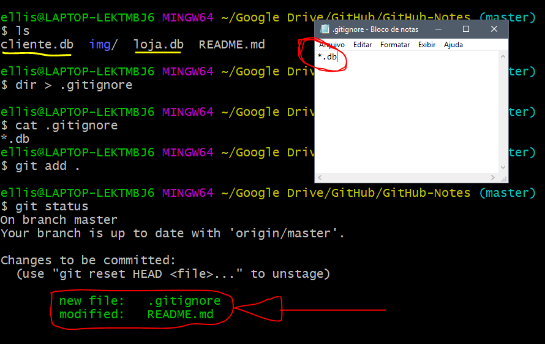

Socorro! Git e GitHub.
Configurando o Git logo após instalação
Deve-se configurar email e nome:
git config --global user.email "ellison.guimaraes@gmail.com"git config --global user.name "Ellison William"Ou o editor:
xxxxxxxxxxgit config --global core.editor emacs
Para saber quais são os dados aplicados posteriormente:
xxxxxxxxxxgit config user.nameIrá retornar o nome inserido, assim como git config user.email o email.
Inicializando um repositório
Primeiramente, devemos criar uma pasta, acessa-lá e escrever o seguinte comando:
xxxxxxxxxxgit initSe você der um ls -la, verá que foi criado um diretório oculto chamado .git.

Comandos
Git Status
Através desse comando git status, é possível ver quais sãos os estados dos arquivos no repositório. Estados possíveis:

untracked: Não foi adicionado (git add ...)unmodified: Foi adicionado (não comitado)modified: Foi modificadostaged: Foi comitado.
Na imagem a seguir podemos verificar dois dos estados:

Git Add
O comando git add serve para adicionar os arquivos ao repositório. Não basta somente colocar os arquivos na pasta, deve-se adicionar cada item para o repositório.
Pode ser utilizado o git add . que adiciona TODOS os arquivos, ou o git add nomearquivo.txt para especificar o arquivo.
Foi utilizado na sessão anterior o
git addespecífico.
Git Commit
Até agora adicionamos e criamos os repositório, para salvar uma versão usasse o commit. Para adicionar uma nova versão é usado o seguinte comando:
xxxxxxxxxxgit commit -m "Mensagem de especificação"-m indica que vai ser inserido uma mensagem e em seguida e mensagem em aspas duplas.
A partir daí, tem-se uma versão!

Pode ser visto um código que é ÚNICO, a quantidade de arquivos modificados e em qual branch foi adicionada.
Git Log
Através do comando log podemos obter informações de todos os commits. Informações como hash, data, autor, branch, descrição e etc.
git log: Descreve todos oscommitsem ordem mais recente.git log --author="ellison": Busca oscommitsespecíficos desse autor.git log --graph: Mostra de forma gráfica o caminho doscommitse se houve desvio/branch.git show 589984561dsadsa694a: Informando a hash verifica-se mais informações docommit.
Exemplos:

e o log show hash:

Git Diff
Parecido com o log show hash, porém, o log show é utilizado para arquivos já comitados. Já o git diff é usado para verificar quais arquivos que foram modificados antes de dar um commit.

O git diff --name-only mostra somente o nome dos arquivos modificados.
Git Checkout
Caso você tenha editado um arquivo que ainda não tenha feito git add e queira recuperar o arquivo anterior, basta da um git checkout nomearquivo.md.
E se já tiver dado o add ou o commit? Use o:
Git Reset
O comando git reset HEAD README.md, tira do processo de add e retorna para o modified, onde pode ser modificado ou aplicado o git checkout nomearquivo.md para tirar toda a mudança feita.
E se já estiver comitado?
No reset, existem 3 tipos de variações:
--soft: Vai matar ocommitmas as modificações estará emstatedpara ser comitado novamente.--mixed: O mesmo que o de cima, porém, vai retornar para modified.--hard: Mata e ignora as modificações.
Um pequeno exemplo com git reset --hard hash:

Podemos observar através do git log que existe um commit de nome "return" e o intuito é voltar para a "finals". Para isso, aplicamos o git reset --hard 55cd878668a723dd573a49660396ddcec949157b e voltamos para o commit desejado:

Repositórios Remotos
Agora que já temos nosso repositório criado precisamos jogar o repositório no GitHub. Para isso, iremos criar uma novo repositório no GitHub. Após ter criado, iremos pegar o key HTTPS ou SSH e executar o comando:
xxxxxxxxxxgit remote add origin https://github.com/ellisonguimaraes/GitHub-Notes.gitO comando acima liga a pasta ao repositório no GitHub, mas ainda é necessário fazer um push para que os arquivos subam pro GitHub:
xxxxxxxxxxgit push -u origin masterLogo após, o código estará disponível no GitHub.
O
-una instrução push, é somente para indicar que é para que não precise escrever mais o restante depois do-u. Das próximas vezes somente é necessário dagit push.
Nos comandos, a palavra origin aparece frequentemente.
originé uma referência aos dados contidos no GitHub.No
git remote add origin https://gith.....atribui o repositório á palavra chaveorigin. E no push, siginifica que é para passar do branch master local para o origin(servidor).
O comando
git remotelista todas as palavras chaves com referência do GitHub.
Push
Para fazer um Push, não é necessário colocar o -u como foi mencionado acima. A instrução será:
xxxxxxxxxxgit push origin masterOu seja, irá mandar do branch master para o origin.
Clone
Para clonar um repositório, acesse a key HTTPS ou SSH e execute:
xxxxxxxxxxgit clone git@github.com:ellisonguimaraes/GitHub-Notes.git
Branch

Criando
Para criar um branch, utiliza-se o comando:
xxxxxxxxxxgit checkout -b NomeBranchAo executar esse comando a branch é criada e muda da brench atual para a branch criada.
Usando o comando
git branchele lista os branch's daquele repositório.

Podemos observar que foi trocada a branch na hora da criação, e que listando, podemos ver todas as branch's disponíveis.
Acessando as branch's
Para mudar de branch, usa-se o comando git checkout NomeBranch:

Foi observado que foi mudado a branch.
Excluindo
Para excluir uma branch, é utilizado o código git branch -D NomeBranch:

Merge & Rebase
Assim que temos um branch e queremos aplicar as alterações ao branch principal (master). Existem duas formas de fazer isso, via Merge e via Rebase.
Merge
Quando se tem uma branch e a escolha de juntar a master é através do Merge: O merge cria um novo commit com a junção do branch com o master.

Na branch master acione o comando:
xxxxxxxxxxgit merge NomeBranch
Rebase
O rebase aplica todas as mudanças a frente da pilha, ou seja:

O branch criado é adicionado ao final da fila e o master aponta para o final da pilha novamente:

Na branch master acione o comando:
xxxxxxxxxxgit rebase NomeBranch
.gitignore
O .gitignore é um arquivo que fica dentro da pasta raiz. Dentro dela adicionamos arquivos que não queremos que vá para o GitHub no commit.
Por exemplo:

No exemplo acima, temos na pasta dois arquivos .db e criamos um .gitignore com o *.db, ou seja, todos os arquivos com extensões .db não vão ser inclusos no commit. Logo abaixo poderá ver que ao dar um add os arquivos são ignorados.
Se quiser somente barrar um arquivo específico, é só especificar o nome dele. Por exemplo, cliente.db.